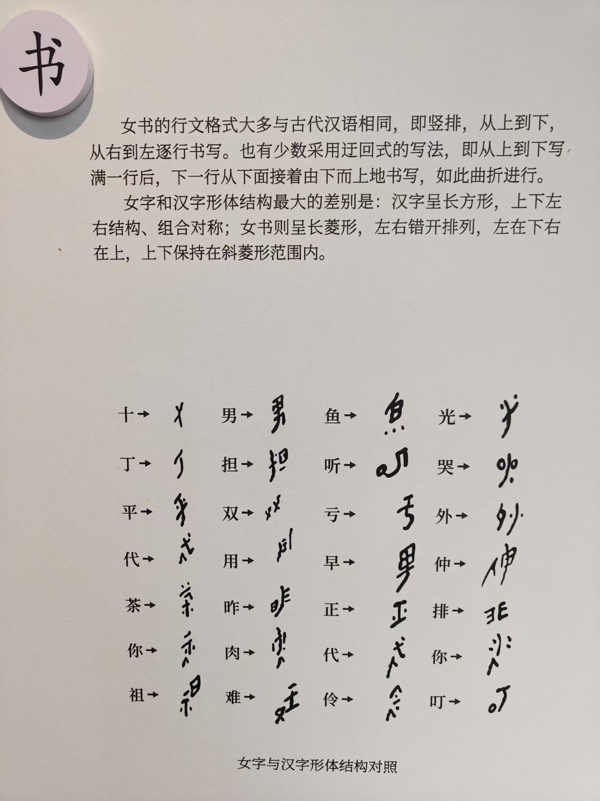

照片资料 · 原图与文字整理
书 · 女书怎样书写
竖排的行文方式、迂回式写法，以及长菱形字形的结构特点。


文字整理仅覆盖可辨识内容，局部细节请以原图为准。
文字整理与阅读说明
展板文字整理
女书的行文格式大多与古代汉语相同，即竖排，从上到下，从右到左逐行书写。也有少数采用迂回式的写法，即从上到下写满一行后，下一行从下面接着由下而上地书写，如此曲折进行。
展板对女字和汉字形体结构的比较是：汉字呈长方形，上下左右结构、组合对称；女书则呈长菱形，左右错开排列，左在下右在上，上下保持在斜菱形范围内。
读图提示
下方“女字与汉字形体结构对照”展示汉字与手写字形。请放大原图观察；本页没有把这些手写字形自动对应到计算机字形编号，也不据此提供汉字到女书的翻译。